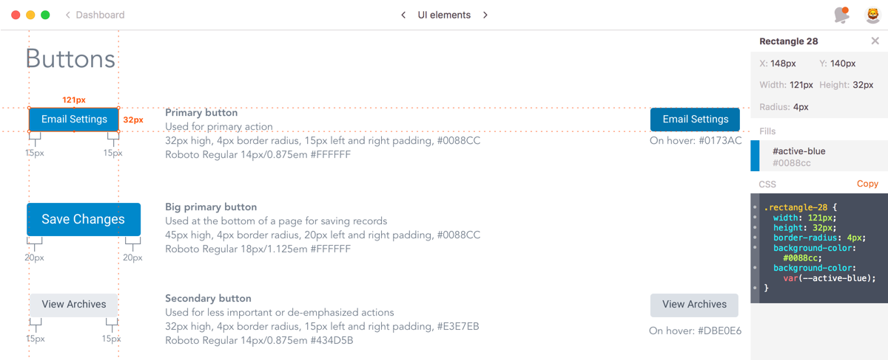
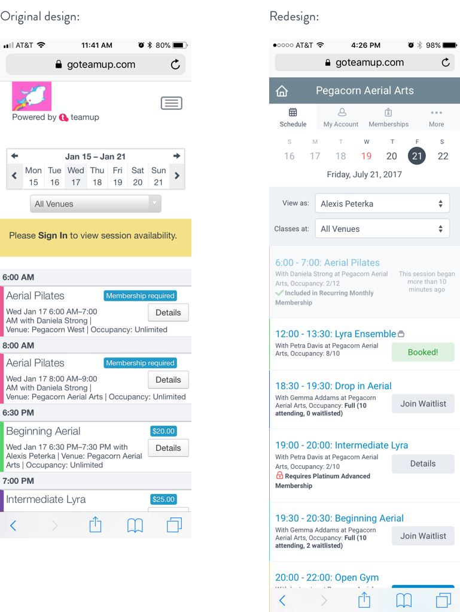

Teamup Redesign, 2017
Skills
- Information architecture
- UX design
- Responsive UI design
- Accessible design
- Icon design
- Copy writing
Tools
- usabiliTEST
- Sketch
- Adobe Illustrator
- Zeplin
- InVision
- Medium
Artifacts
- Card sort dendrograms
- Content maps
- Mockups
- Interactive prototypes
- Icon SVGs
- Customer-facing blog post
Problem
The teamup provider portal’s content architecture had not been updated in several years, and as a result of many new features being added over that period, the navigation had grown unwieldy. This meant that features were hard for our customers to find, resulting in support calls and frustration that commonly-used actions were difficult to access. In addition, UI elements were not consistent (there were three different treatments for tabs, for example) and the visual design felt outdated.

Solution
I began by asking our support team to participate in a card sorting exercise to lay the foundation of a more customer-centered information architecture model, then added on to that by using Google Analytics to identify the most commonly accessed features. As I validated that model using one-on-one customer interviews, I used existing Jira tickets and industry research to begin a visual redesign of existing features while adding requested functionality. Working closely with the front-end developers and using accessibility tools like WebAIM, I created a style guide in both InVision and Zeplin that included responsive layouts.
Once we started launching the redesign in phases, I began writing posts for the company blog to keep customers in the loop.

Result
With a small team, we’ve managed to maintain a consistent cadence of releasing redesigned sections of the site in conjunction with functional upgrades and back end improvements. The customer feedback has been positive, and seeing regular improvements to both the look-and-feel and the functionality has helped close the loop between the support team and the product team.

